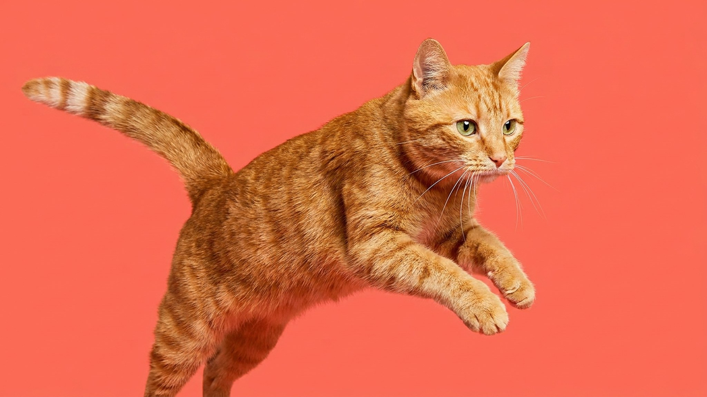

Карта тела кошки: куда гладить можно, а куда — не стоит

26 июля 2026 · 3 минуты чтения · Поведение кошек
Кошка сама пришла на колени — и через тридцать секунд укусила руку. Знакомо? Это не агрессия из ниоткуда: она трижды сказала «хватит», вы просто не заметили. У каждой кошки есть зоны, где прикосновение приятно, и зоны, где оно воспринимается как угроза. Разобраться в этой карте — значит перестать получать царапины и выстроить реальный контакт.
Зелёные зоны: здесь кошки любят прикосновение
Эти места большинство кошек принимают с удовольствием — здесь расположены железы, которыми они метят «своё», и прикосновение к ним воспринимается как дружественный ритуал.
- Щёки и скулы. Угол рта, основание усов — главная «зона доверия». Именно здесь кошка трётся о вас сама. Медленный массаж по направлению шерсти — почти всегда принимается хорошо.
- Подбородок. Кошке сложно почесать его самой. Тихое поглаживание снизу вверх — частый триггер урчания.
- Основание ушей (снаружи). Лёгкое почёсывание у основания уха с внешней стороны. Не внутри раковины — просто у корня.
- Основание хвоста (надхвостье). Многие кошки реагируют топтанием или поднимают хвост трубой. Это рефлекторная зона — не путайте с хвостом.
- Лоб и темя. Между ушами, вдоль линии лба — большинству нравится, особенно медленные поглаживания.
Жёлтые зоны: осторожно, зависит от кошки
Эти зоны одни кошки принимают спокойно, другие — категорически нет. Читайте реакцию конкретного животного.
- Спина вдоль позвоночника. Большинство кошек любят, но у некоторых — особенно с гиперестезией кожи — прикосновение к пояснице вызывает раздражение или резкую реакцию.
- Бока. Нейтральная зона: не особо любят, не особо против. Хороший старт при знакомстве с новой кошкой.
- Грудь. Зависит от доверия. Хорошо принимается кошками, которые сами ложатся на вас.
Красные зоны: трогать — только если кошка сама предложила
Прикосновение к этим зонам без явного приглашения — риск. Даже у очень ручных кошек терпение здесь короткое.
- Живот. Кошка перевернулась на спину — это не приглашение гладить живот. Это жест доверия и расслабленности, но не запрос на прикосновение к уязвимой зоне. Большинство кошек схватят руку через секунду-другую.
- Лапы. Лапы — инструмент охоты и бегства. Прикосновение к ним воспринимается как попытка обездвижить. Даже ласковые кошки убирают лапу.
- Хвост. Хвост — продолжение позвоночника, зона высокой чувствительности. Хватать или гладить по всей длине — почти всегда неприятно.
- Область паха и задние лапы. Самая уязвимая зона, рефлекторная реакция — защититься. Не трогать без необходимости.
Сигналы «хватит»: кошка предупреждает, прежде чем укусить
Кошки не «нападают внезапно» — они предупреждают заранее, просто тихо. Вот цепочка сигналов от мягкого к жёсткому:
- Перестала мурчать, тело немного напряглось.
- Кожа на спине задёргалась (рябь по шерсти).
- Хвост начал двигаться — щёлкать или медленно раскачиваться из стороны в сторону.
- Уши повернулись назад или прижались.
- Голова повернулась к вашей руке — взгляд зафиксировался.
- Следующий шаг — укус или царапина.
Правило простое: заметили любой из этих сигналов — остановитесь и дайте кошке уйти. Не «ещё пять секунд», не «она привыкнет». Уважение к сигналам выстраивает доверие быстрее, чем любое количество насильственных объятий.
🐾 Первая помощь — всегда под рукой
AnimaLife подскажет, что делать в тревожной ситуации с питомцем ещё до визита к врачу. Откройте в один тап.
Открыть AnimaLife → Открыть в MAX →
🐾 Понравился разбор?
Подпишитесь на канал — каждый день разбираем по одному тревожному симптому у кошек и собак: что в пределах нормы, а когда пора к врачу. Подпишитесь, чтобы не пропустить разбор, который может спасти здоровье вашего питомца.
Материал носит информационный характер и не заменяет очную консультацию ветеринара.
← Все статьи · Открыть AnimaLife в Telegram · RSS